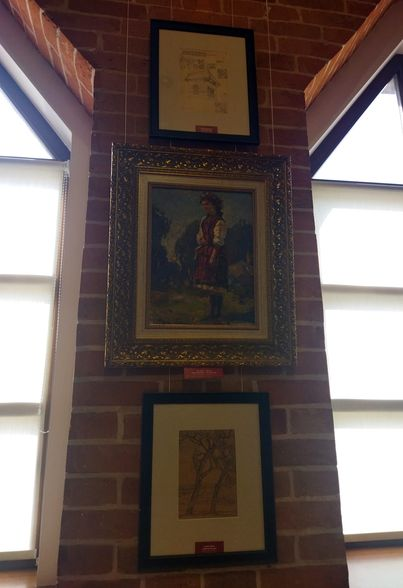
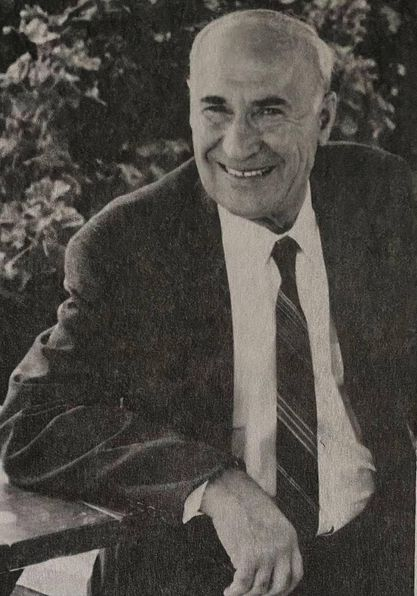

Запрошуємо на урочисте закриття виставки до 150-річчя Василя Кричевського і нагадуємо, що ці оригінали книжкової графіки ми експонуємо не частіше, ніж раз на 10 років, і для цієї виставки повернули їх з евакуації.
То ж, якщо ви ще не повдивлялися в характери, орнаменти, архітектурні та інтер'єрі елементи серед графіки, переданої до фондів нашого музею родиною митця із-за кордону, то маєте ще середу-неділю для цього.
Поспішайте!
Приголомшлива звістка, що не дає змоги одразу опанувати думки й почуття, сколихнула нашу музейну родину… 3 листопада 2021 року, на 96 році життя, зупинилося серце нашого доброго друга й наставниці КАТЕРИНИ КРИЧЕВСЬКОЇ-РОСАНДІЧ. Це була чудова людина, представниця великої мистецької родини, яку Творець щедро нагородив неймовірним талантом художниці, умінням глибоко любити Україну й щиро турбуватися про ближніх. Згасла не просто зірка, згасло Світило… Наша спільна програма повернення імені Кричевських на культурно-духовне поле Новітньої Української Держави стала вагомим підґрунтям заснування в структурі Національного музею-заповідника українського гончарства Музею мистецької родини Кричевських. Добре пам’ятаємо ЇЇ нестримну радість і безкорисливу підтримку з нагоди відкриття цього музею. Ми не припиняємо висловлювати слова безмежної вдячності Пані Катерині за передану Музею-заповіднику частину унікального архіву Кричевських, що містить листування й сімейні фотографії. Пишаємося й радіємо, що авторські картини Катерини Кричевської-Росандіч стали невід’ємною частиною колекції Музею гончарства! В особі Пані Катерини Україна втратила достойну доньку, яка наполегливо вболівала за збереження й відновлення історичної пам’яті не лише про династію Кричевських, а й загалом про Українську Державу. Людина, яка буває раз на все життя, тихо пішла за Межу, проте назавжди залишиться в нашій пам’яті та думках. Світла і вічна пам'ять… Щирі співчуття рідним і знайомим від колективів Національного музею-заповідника українського гончарства, Інституту керамології – відділення Інституту народознавства НАН України та Громадської організації «Конгрес українських керамологів».
29 вересня в Нацiональний музей «Київська картинна галерея» за участі Музей української діаспори та Charitable Foundation “Diaspora” відбулося урочисте відкриття заключної виставки проєкту «КАТЕРИНА КРИЧЕВСЬКА-РОСАНДІЧ. ДОРОГИ. STRAßEN. ROADS», організованого з нагоди 95-річного ювілею української американської художниці й меценатки за підтримки Український культурний фонд.
Сьогодні, 2 вересня, святкує свій День народження одна з берегинь роду Кричевських – талановита художниця Катерина Кричевська-Росандіч.
І хоча в Каліфорнії зараз ніч, в її рідній Україні ця знакова подія вже настала!
У такі поважні роки бажаємо Катерині Василівні, щоб здоров’я було непохитним, а всілякі негаразди миттєво відступали. Бажаємо, щоб колосальний досвід мисткині жадібно черпали нащадки, збагачуючись мудрістю знань, переймаючи непересічну майстерність і всотуючи найпозитивніше світосприйняття! Нехай і надалі життя буде сповнене невичерпною енергією, а внутрішній світ – вічною молодістю!
10 січня – особливий день для Музею мистецької родини Кричевських, адже саме сьогодні відзначають свій День Народження одразу двоє представників славетної династії Кричевських – Василь Лінде-Кричевський та Василь Лінде-Дункан.
Радіємо з того, що ви активно долучаєтеся до розвитку Музею й завжди підтримуєте його найсміливіші починання. Тож у цей святковий день зичимо наснаги на нові звершення! Хай доля приносить тільки приємні сюрпризи, а всі негаразди оминають стороною! Нев’янучого вам здоров’я, благополуччя, міцності духу для здійснення всього задуманого!

Сьогодні, 22 травня, день народження видатного митця та педагога Федора Григоровича Кричевського. Його внесок у розвиток українського мистецтва та мистецької освіти просто неоціненний! Мати його роботи у своїх експозиціях - це щастя та честь для будь-якого музею. З недавніх пір і Музей мистецької родини Кричевських має що показати шанувальникам творчості Маестро та усім спокушеним у мистецтві відвідувачам.
До Міжнародного дня театру.
Замальовки з біографії Миколи Кричевського.
"Серед ранніх захоплень юного мистця, окрім живопису, був театр. Кричевський працював з трупою Миколи Садовського, одного з корифеїв українського театру: виконував декорації до вистав та епізодичні ролі в постановках.
У 1919 році в складний для України історичний період Микола Кричевський отримав унікальну нагоду - разом з трупою Садовського виїхати на закордонні гастролі. Це був щасливий квиток на шляху до творчої самореалізації.
Спочатку разом з акторами Кричевський прибув до Закарпатської України, яка тоді входила до складу Чехословаччини. 19 серпня 1921 року вони приїхали в Ужгород на запрошення головного відділу "Просвіти". Миколу Садовського обрали мистецьким керівником "Руського театру" - першого професійного українського театру на Закарпатті. За нетривалий час Садовський як режисер підготував прем'єрну постановку опери С. Гулака-Артемовського "Запорожець за Дунаєм". Художнє оформлення до неї виконав Микола Кричевський. Мистець також виступив на сцені, зігравши одну з епізодичних ролей - Селіх-Аги."
(Зі статті Ганни Лексіної до каталогу "Микола Кричевський. Мистець і світ")
На фото: Микола Кричевський (перший вгорі зліва) в колі трупи Миколи Садовського на закордонних гастролях на Закарпатті (Чехословччина). 1920-ті роки. Музей української діаспори
Василь Васильович Кричевський, як і його батько, був одним з перших художників українського кіно. Серед оформлених ним фільмів найвідомішим, безперечно, є «Земля» (1930) Олександра Довженка. Але Василеві молодшому на початку своєї роботи в кіно вдалося також спробувати себе як актора.
У 1926 році Василь Васильович Кричевський знімав свій перший фільм «Сорочинський ярмарок» для Одеської кіностудії. Зйомки проходили на території села Сорочинці. Акторові, який виконував роль цигана, стало погано. Хтось підказав, що їхній художній керівник, Василь Васильович, має відповідний типаж, а оскільки немає часу шукати іншого актора, то треба загримувати Василя, а він зіграє цигана. Так і зробили, й результати були позитивними! Василь таки виглядав як справжній циган!

18 березня, народився ВАСИЛЬ КРИЧЕВСЬКИЙ МОЛОДШИЙ (1901, Харків – 1978, Пало Альто) – відомий український американський художник-емігрант, син видатного мистця Василя Григоровича Кричевського.
Освіту здобув у майстерні батька в Київському художньому інституті, який закінчив у 1923 році. Працював художником кіно на Київській та Одеській кіностудіях. У 1930-х рр. викладав у Київській художньо-індустріальній профшколі. У 1943 році разом із дружиною Оленою й донькою Катериною виїхав до Праги. Після завершення війни родина перебувала у німецькому Ді-Пі таборі в Мангаймі, а 1949 року емігрувала за океан. Із 1949 року Кроичевські проживали у США. Заробляючи на життя здебільшого некваліфікованою працею, в еміграції Василь знаходив час і на мистецтво, створюючи численні американські пейзажі та українські краєвиди по пам’яті, а також працював у сфері рекламного дизайну.
Помер мистець 16 червня 1978 року в Пало-Альто (Каліфорнія), похований на українському цвинтарі Св. Андрія в Саут-Баунд-Бруці (штат Нью-Джерсі).
«Орнаментами Василь Григорович Кричевський займався не постійно, а спорадично. В самі тяжкі, неспокійні часи війни або революції він зовсім не міг займатись малюванням або архітектурою; але коли він іноді брав у руки олівець або клаптик паперу – він починав виводити орнаменти.
Так було в Миргороді взимку 1918-1919 р., так було під час Другої світової війни в Києві в 1942 році, у Львові в 1943-1944 році, було в Судетах – в с. Техловіце – в 1945 р., і в Каракасі в 1951-1952 р.» (зі спогадів Є.М. Кричевської).
Пропонуємо ознайомитися з орнаментами, створеними в Каракасі у 1951 році, з колекції Музею мистецької родини Кричевських .